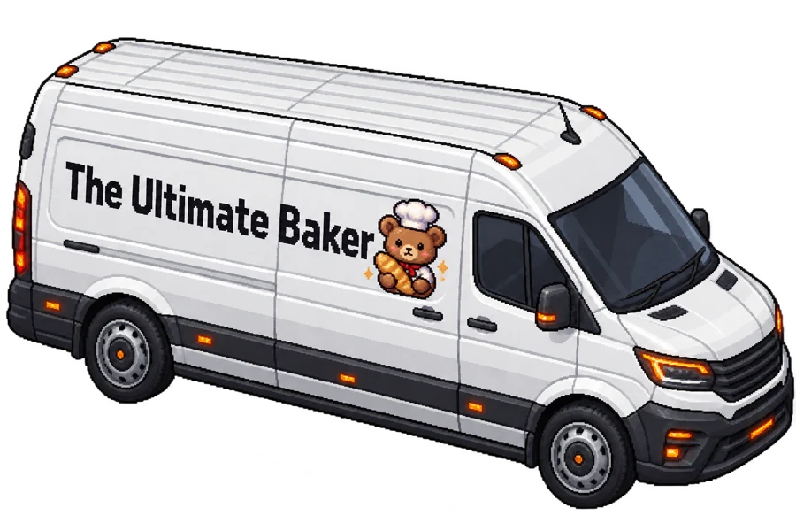
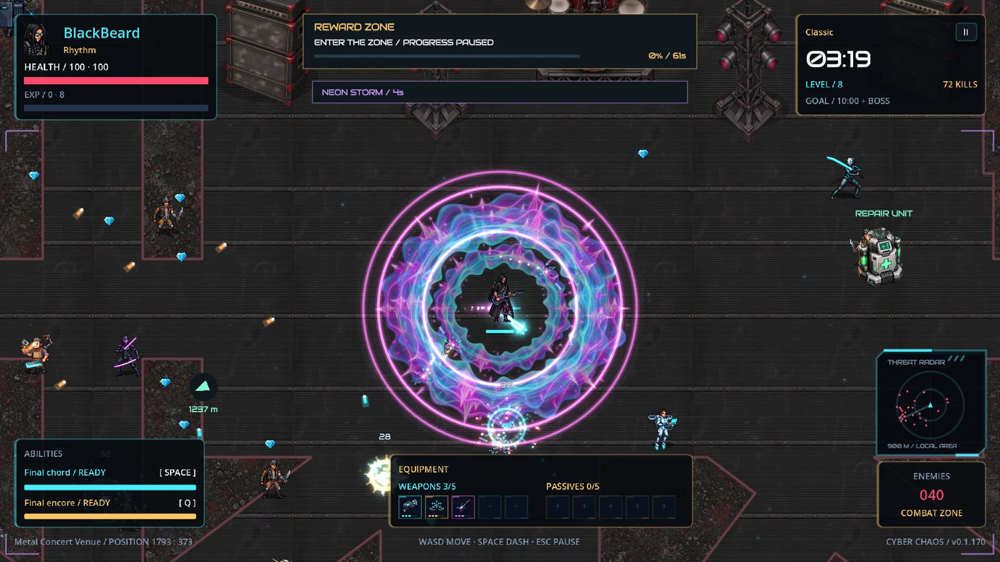
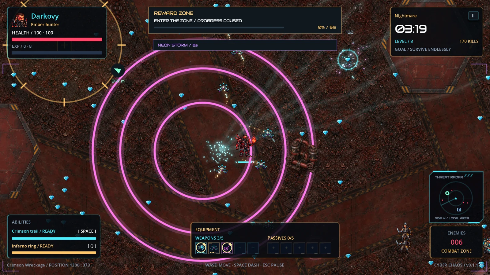
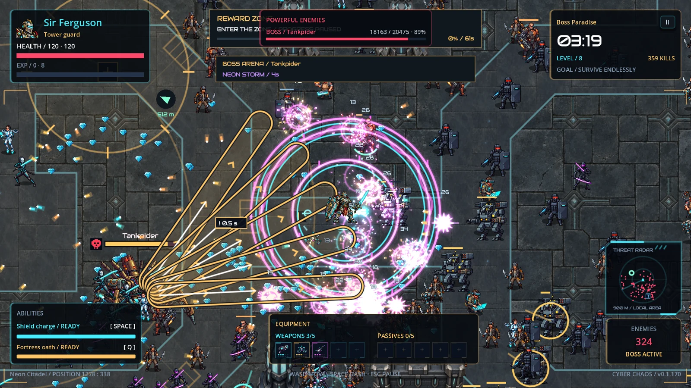
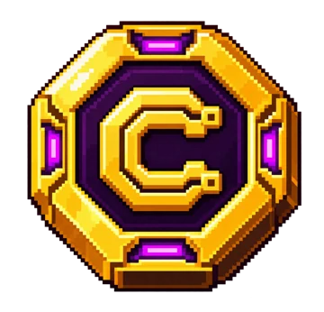

ARTOVY SUNAR / CYBER CHAOS
KAOS SENİ
BEKLEMEZ.
Siber ordular kapıda.
Bir kahraman seç. Kendi efsaneni yaz.
HOŞ GELDİN, HAYATTA KALAN.
Her dalga daha kalabalık.
Sen daha tehlikelisin.
Silahların otomatik ateş eder. Rotanı sen çizersin.
Dash ile kuşatmadan sıyrıl, doğru geliştirmeleri birleştir
ve siber kaosun ortasında kendi savaş tarzını kur.
BİR KOŞU DAHA.
BİR EVRİM DAHA.
BİR ADIM DAHA İLERİ.
01 / EKİBİNİ BUL
AYNI KAOS.
FARKLI KURALLAR.
Her kahraman, başka bir savaş tarzı.
Kaydır veya ekibinle tanış.
PLAZMA ÇEKİRDEĞİ
ROBOMAN
Fildişi zırhın içinde durmayan bir güç. Koluna entegre plazma topuyla düşman hattını erit.
YOL VERİN.
Taze ekmek.
Sert iniş.

BUSHEAD / ÖZEL TESLİMAT02 / HER BÖLGE BAŞKA BİR HİKÂYE
CEPHE
DEĞİŞİYOR.
Konserin sesi yükseliyor. Fırınlar hâlâ sıcak.
Her kahramanın dünyasında yeni bir çatışma var.

GERÇEK OYUN GÖRÜNTÜSÜBLACKBEARD'İN BÖLGESİ
SON SES.
SON DALGA.
Amfiler, sahne ışıkları ve düşman orduları. Bu konser kolay bitmez.STORY'DE HARİTALARI AÇ. DİĞER MODLARDA KENDİ CEPHENİ SEÇ. ← BÖLGELERİ KEŞFET →
SİLAH + GÜÇLENDİRME =
KONTROLSÜZ
GÜÇ.
Cephaneliğin senin imzan.
Silahları pasif güçlendirmelerle eşleştir.
Evrimleri keşfet. Dalgaların içinden geç.


03 / GÖRMEK YETMEZ.
KAOSU
HİSSET.
Gerçek oynanış. Gerçek çatışma.

CYBER TOKEN / OYNAYARAK KAZANHER KOŞU BİR İZ BIRAKIR.
DÜŞSEN DE
BİRİKİMİN KALIR.
Düşmanlardan Cyber Token topla. Kaybetsen de tokenların seninle kalır. İstersen birikiminle sıradaki Story bölümünü tamamla ve yeni kahramanını aç.
STORY BÖLÜMÜ TAMAMLAMA
Oyun içi satın alma yok. Sadece sen ve kazandıkların.
SIRADAKİ DALGA GELİYOR.
SEN
HAZIR MISIN?
MICROSOFT STORE'DA OYNA ↗Windows PC · Tek oyunculu & co-op · Türkçe dahil 7 dil